공식 MultiFloor3D 재현이 아닌, 논문 아이디어를 이용한 부분 구현 / 대조 실험입니다. 입력 mesh 및 기존 바닥·천장·가구 보완을 고정하여 경계 단순화와 벽 평면 근사의 효과를 비교합니다. 기존 결과와 선별 결정은 변경하지 않았습니다.
A: 기존 결과 · B: A의 경계를 다각형으로 단순화(3cm) · C: 원본 semantic mesh의 벽 평면 근사 + 실내 영역 다각형화. 맞추기 어려운 곡면·잔여 벽은 기존 관측을 유지합니다.
흰색은 구조적 실내 바닥 영역 추정치입니다. 검정은 벽·외부·미관측이 섞여 있습니다. 원본 textured mesh는 바닥 +1.65m roof-cut입니다. 원본 스캔의 정답 평면도는 없으므로 IoU는 A와의 일치도이며 정확도가 아닙니다.
구현 범위·미구현 단계·출처 · 요약 수치 · 전체 수치 · 공식 생성 코드 공개 요청 이슈
작은 경계 요철은 단순해지지만 큰 벽 돌출, 방 누락, 잘못 막힌 통로의 자동 해결은 확인되지 않았습니다. 생성된 C를 새 정답으로 채택하지 않습니다. B의 00017 장면에서는 공통 내부 지점의 연결 변화가 발견되어 특히 주의가 필요합니다.
C–A 평균 IoU 0.9927 / 평균 변경 영역 1.179 m². B의 경계 꼭짓점 수 평균 감소 89.2%. 이는 단순화 정도이며 품질 개선률이 아닙니다.
| 방식 | free m² | A 대비 추가 / 제거 m² | 관측 바닥 유지율 | 연결 손실 / 증가 쌍 |
|---|---|---|---|---|
| A | 86.968 | 0.000 / 0.000 | 99.93% | 0 / 0 |
| B | 87.093 | 0.410 / 0.286 | 99.71% | 0 / 249 |
| C | 86.963 | 0.334 / 0.340 | 99.72% | 0 / 0 |
연결 비교: 최대 250개의 공통 내부 지점, 0.5m 간격, 벽과 10cm 여유. 변화 없음은 모든 통로가 올바름을 의미하지 않습니다.
B: clearance-aware connectivity changed
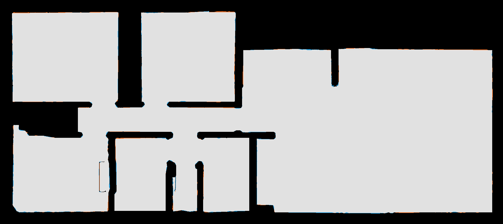
| 방식 | free m² | A 대비 추가 / 제거 m² | 관측 바닥 유지율 | 연결 손실 / 증가 쌍 |
|---|---|---|---|---|
| A | 134.470 | 0.000 / 0.000 | 99.93% | 0 / 0 |
| B | 134.595 | 0.534 / 0.408 | 99.71% | 0 / 0 |
| C | 134.669 | 0.556 / 0.356 | 99.75% | 0 / 0 |
연결 비교: 최대 250개의 공통 내부 지점, 0.5m 간격, 벽과 10cm 여유. 변화 없음은 모든 통로가 올바름을 의미하지 않습니다.
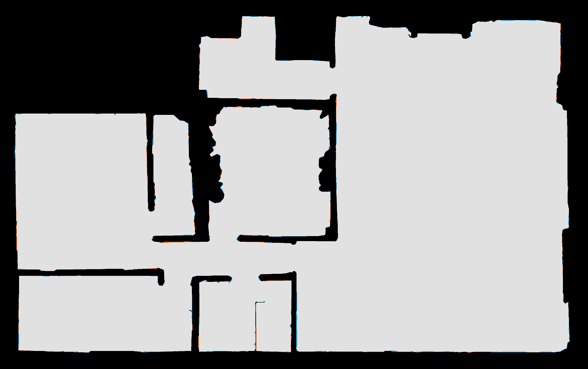
| 방식 | free m² | A 대비 추가 / 제거 m² | 관측 바닥 유지율 | 연결 손실 / 증가 쌍 |
|---|---|---|---|---|
| A | 145.941 | 0.000 / 0.000 | 99.92% | 0 / 0 |
| B | 146.065 | 0.566 / 0.442 | 99.68% | 0 / 0 |
| C | 145.935 | 0.525 / 0.531 | 99.62% | 0 / 0 |
연결 비교: 최대 250개의 공통 내부 지점, 0.5m 간격, 벽과 10cm 여유. 변화 없음은 모든 통로가 올바름을 의미하지 않습니다.
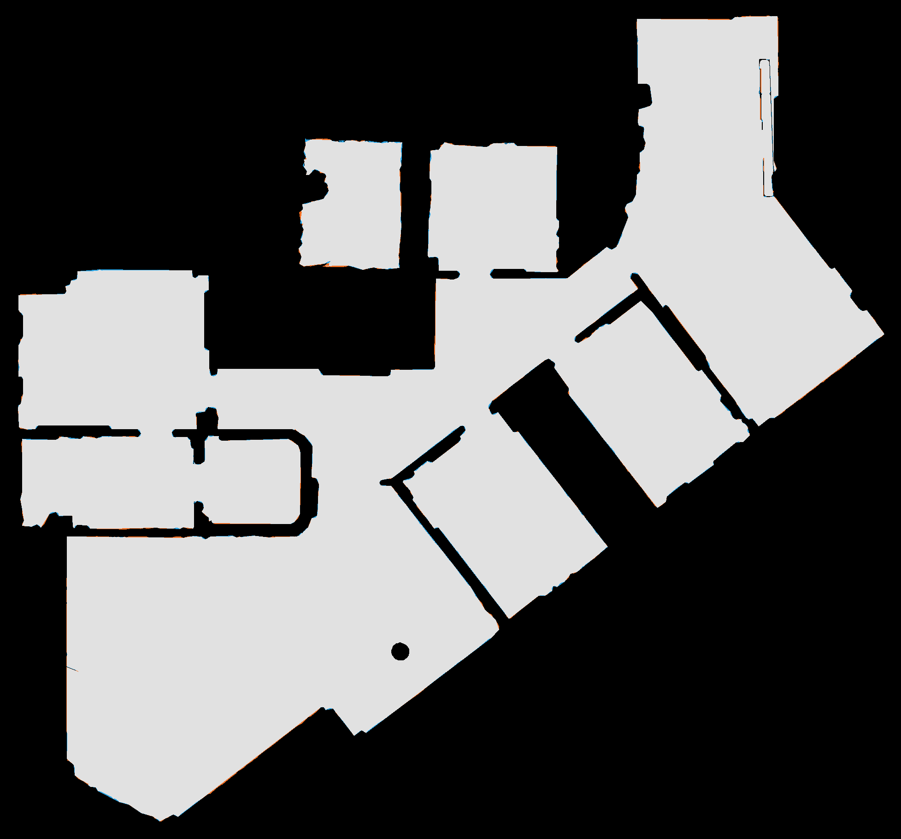
| 방식 | free m² | A 대비 추가 / 제거 m² | 관측 바닥 유지율 | 연결 손실 / 증가 쌍 |
|---|---|---|---|---|
| A | 94.760 | 0.000 / 0.000 | 99.95% | 0 / 0 |
| B | 94.496 | 0.275 / 0.540 | 99.90% | 0 / 0 |
| C | 94.843 | 0.371 / 0.288 | 99.91% | 0 / 0 |
연결 비교: 최대 250개의 공통 내부 지점, 0.5m 간격, 벽과 10cm 여유. 변화 없음은 모든 통로가 올바름을 의미하지 않습니다.
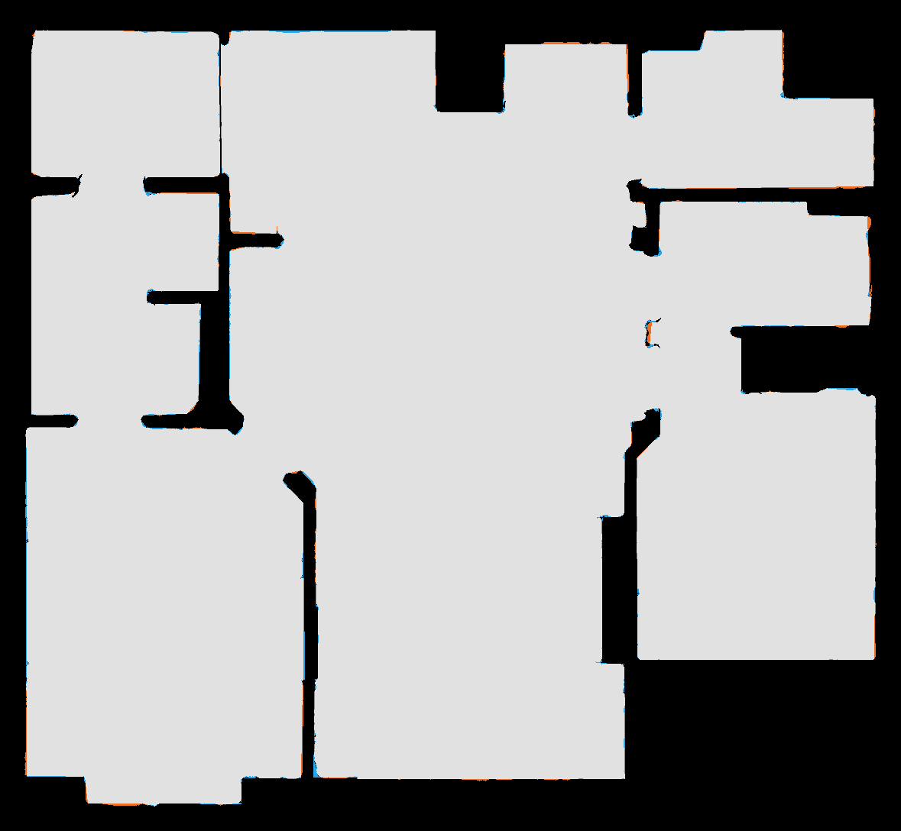
| 방식 | free m² | A 대비 추가 / 제거 m² | 관측 바닥 유지율 | 연결 손실 / 증가 쌍 |
|---|---|---|---|---|
| A | 119.979 | 0.000 / 0.000 | 99.92% | 0 / 0 |
| B | 119.796 | 0.500 / 0.683 | 99.54% | 0 / 0 |
| C | 119.853 | 0.481 / 0.606 | 99.50% | 0 / 0 |
연결 비교: 최대 250개의 공통 내부 지점, 0.5m 간격, 벽과 10cm 여유. 변화 없음은 모든 통로가 올바름을 의미하지 않습니다.
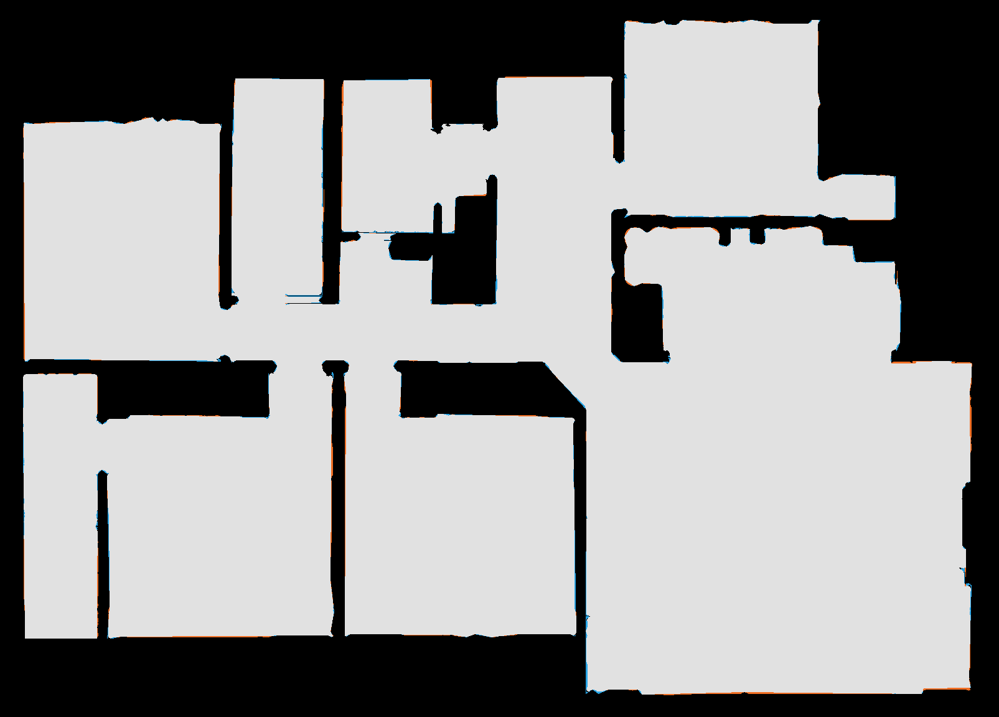
| 방식 | free m² | A 대비 추가 / 제거 m² | 관측 바닥 유지율 | 연결 손실 / 증가 쌍 |
|---|---|---|---|---|
| A | 214.956 | 0.000 / 0.000 | 99.89% | 0 / 0 |
| B | 214.520 | 0.712 / 1.148 | 99.78% | 0 / 0 |
| C | 215.162 | 0.987 / 0.780 | 99.83% | 0 / 0 |
연결 비교: 최대 250개의 공통 내부 지점, 0.5m 간격, 벽과 10cm 여유. 변화 없음은 모든 통로가 올바름을 의미하지 않습니다.
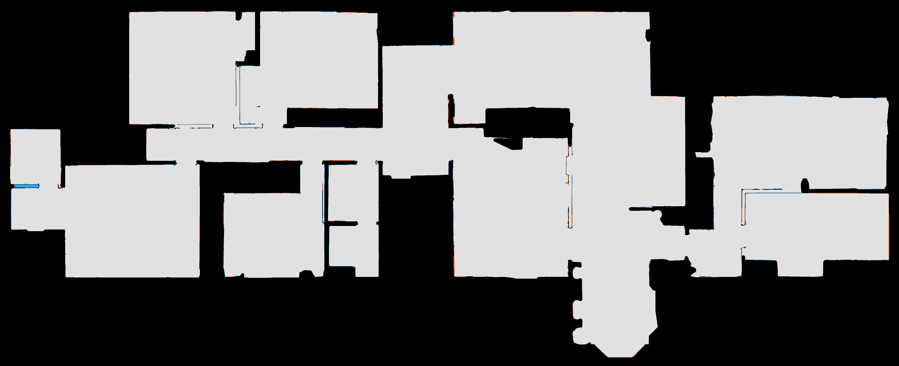
| 방식 | free m² | A 대비 추가 / 제거 m² | 관측 바닥 유지율 | 연결 손실 / 증가 쌍 |
|---|---|---|---|---|
| A | 104.859 | 0.000 / 0.000 | 99.80% | 0 / 0 |
| B | 104.637 | 0.322 / 0.544 | 99.65% | 0 / 0 |
| C | 104.957 | 0.476 / 0.378 | 99.76% | 0 / 0 |
연결 비교: 최대 250개의 공통 내부 지점, 0.5m 간격, 벽과 10cm 여유. 변화 없음은 모든 통로가 올바름을 의미하지 않습니다.
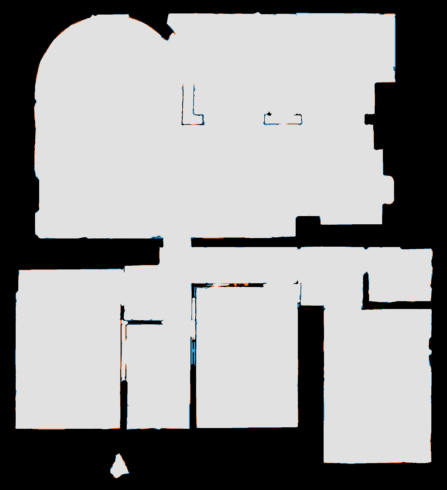
| 방식 | free m² | A 대비 추가 / 제거 m² | 관측 바닥 유지율 | 연결 손실 / 증가 쌍 |
|---|---|---|---|---|
| A | 136.374 | 0.000 / 0.000 | 99.68% | 0 / 0 |
| B | 136.162 | 0.456 / 0.667 | 99.41% | 0 / 0 |
| C | 136.551 | 0.627 / 0.450 | 99.53% | 0 / 0 |
연결 비교: 최대 250개의 공통 내부 지점, 0.5m 간격, 벽과 10cm 여유. 변화 없음은 모든 통로가 올바름을 의미하지 않습니다.
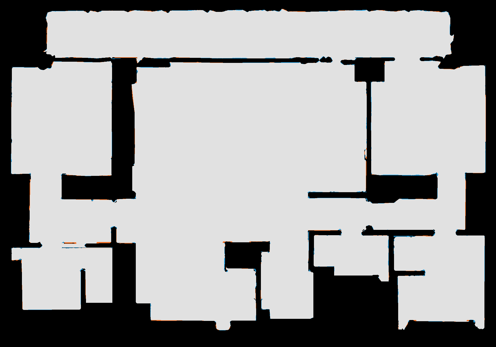
| 방식 | free m² | A 대비 추가 / 제거 m² | 관측 바닥 유지율 | 연결 손실 / 증가 쌍 |
|---|---|---|---|---|
| A | 273.651 | 0.000 / 0.000 | 99.93% | 0 / 0 |
| B | 273.339 | 0.855 / 1.167 | 99.62% | 0 / 0 |
| C | 273.499 | 0.924 / 1.076 | 99.68% | 0 / 0 |
연결 비교: 최대 250개의 공통 내부 지점, 0.5m 간격, 벽과 10cm 여유. 변화 없음은 모든 통로가 올바름을 의미하지 않습니다.
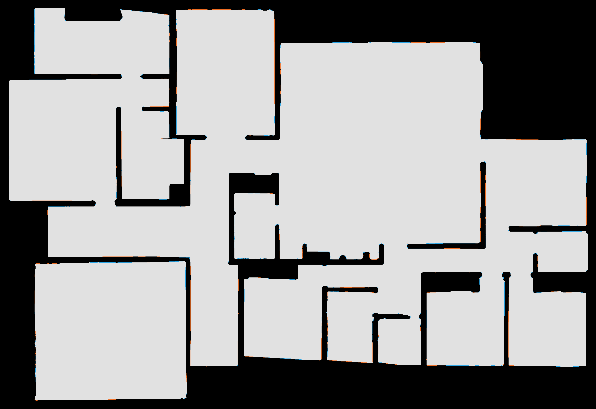
| 방식 | free m² | A 대비 추가 / 제거 m² | 관측 바닥 유지율 | 연결 손실 / 증가 쌍 |
|---|---|---|---|---|
| A | 243.690 | 0.000 / 0.000 | 99.93% | 0 / 0 |
| B | 243.307 | 0.749 / 1.132 | 99.68% | 0 / 0 |
| C | 243.857 | 0.933 / 0.766 | 99.82% | 0 / 0 |
연결 비교: 최대 250개의 공통 내부 지점, 0.5m 간격, 벽과 10cm 여유. 변화 없음은 모든 통로가 올바름을 의미하지 않습니다.
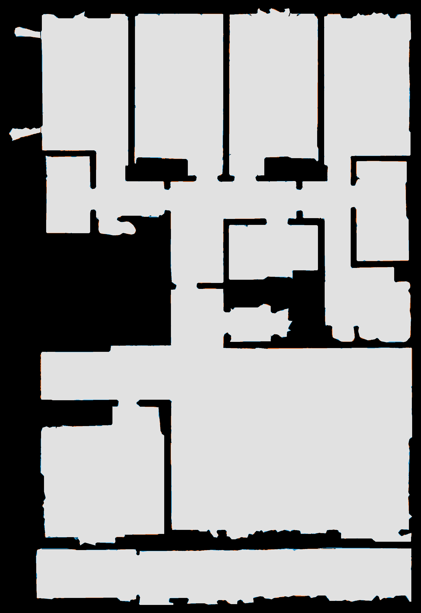
| 방식 | free m² | A 대비 추가 / 제거 m² | 관측 바닥 유지율 | 연결 손실 / 증가 쌍 |
|---|---|---|---|---|
| A | 405.341 | 0.000 / 0.000 | 99.94% | 0 / 0 |
| B | 405.214 | 1.155 / 1.282 | 99.82% | 0 / 0 |
| C | 405.609 | 1.346 / 1.078 | 99.81% | 0 / 0 |
연결 비교: 최대 250개의 공통 내부 지점, 0.5m 간격, 벽과 10cm 여유. 변화 없음은 모든 통로가 올바름을 의미하지 않습니다.
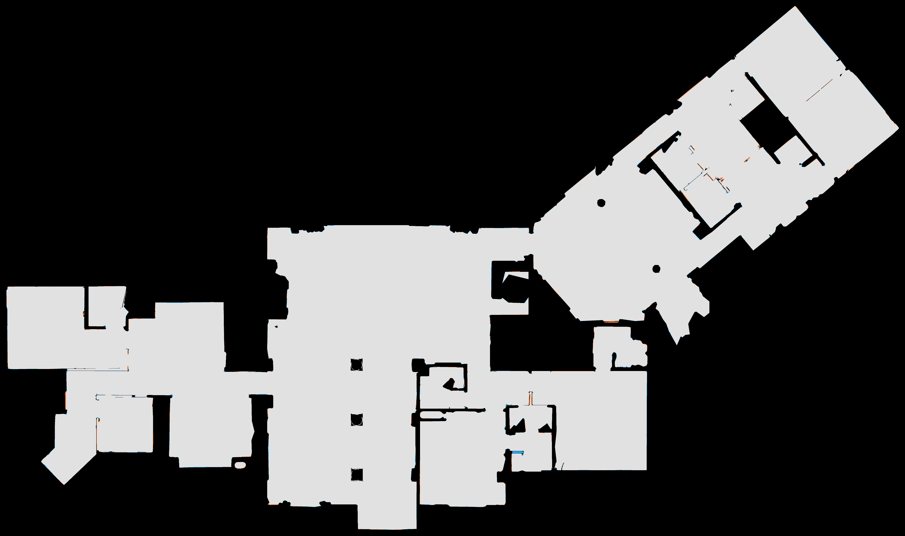
| 방식 | free m² | A 대비 추가 / 제거 m² | 관측 바닥 유지율 | 연결 손실 / 증가 쌍 |
|---|---|---|---|---|
| A | 270.911 | 0.000 / 0.000 | 99.90% | 0 / 0 |
| B | 270.874 | 0.773 / 0.810 | 99.80% | 0 / 0 |
| C | 271.319 | 0.955 / 0.546 | 99.84% | 0 / 0 |
연결 비교: 최대 250개의 공통 내부 지점, 0.5m 간격, 벽과 10cm 여유. 변화 없음은 모든 통로가 올바름을 의미하지 않습니다.
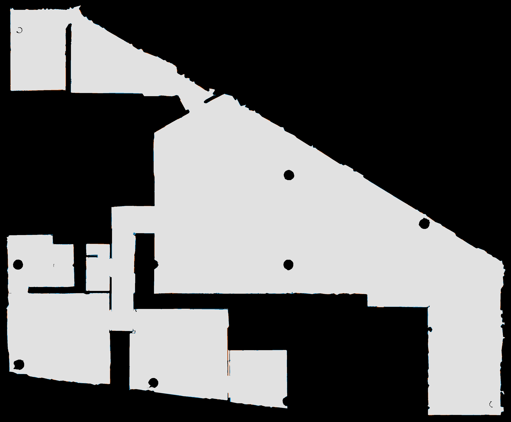
| 방식 | free m² | A 대비 추가 / 제거 m² | 관측 바닥 유지율 | 연결 손실 / 증가 쌍 |
|---|---|---|---|---|
| A | 179.768 | 0.000 / 0.000 | 99.94% | 0 / 0 |
| B | 179.157 | 0.320 / 0.931 | 99.75% | 0 / 0 |
| C | 179.803 | 0.502 / 0.468 | 99.84% | 0 / 0 |
연결 비교: 최대 250개의 공통 내부 지점, 0.5m 간격, 벽과 10cm 여유. 변화 없음은 모든 통로가 올바름을 의미하지 않습니다.
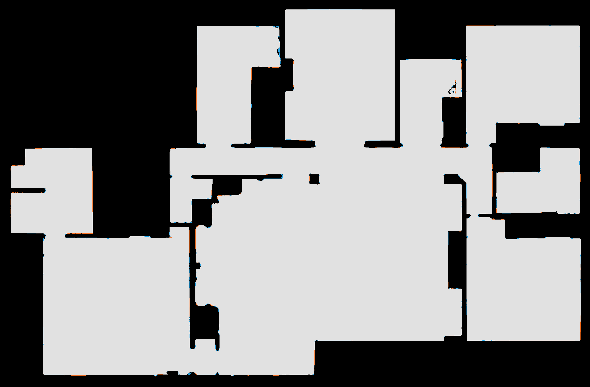
| 방식 | free m² | A 대비 추가 / 제거 m² | 관측 바닥 유지율 | 연결 손실 / 증가 쌍 |
|---|---|---|---|---|
| A | 112.657 | 0.000 / 0.000 | 99.81% | 0 / 0 |
| B | 112.603 | 0.405 / 0.459 | 99.53% | 0 / 0 |
| C | 112.736 | 0.457 / 0.378 | 99.59% | 0 / 0 |
연결 비교: 최대 250개의 공통 내부 지점, 0.5m 간격, 벽과 10cm 여유. 변화 없음은 모든 통로가 올바름을 의미하지 않습니다.
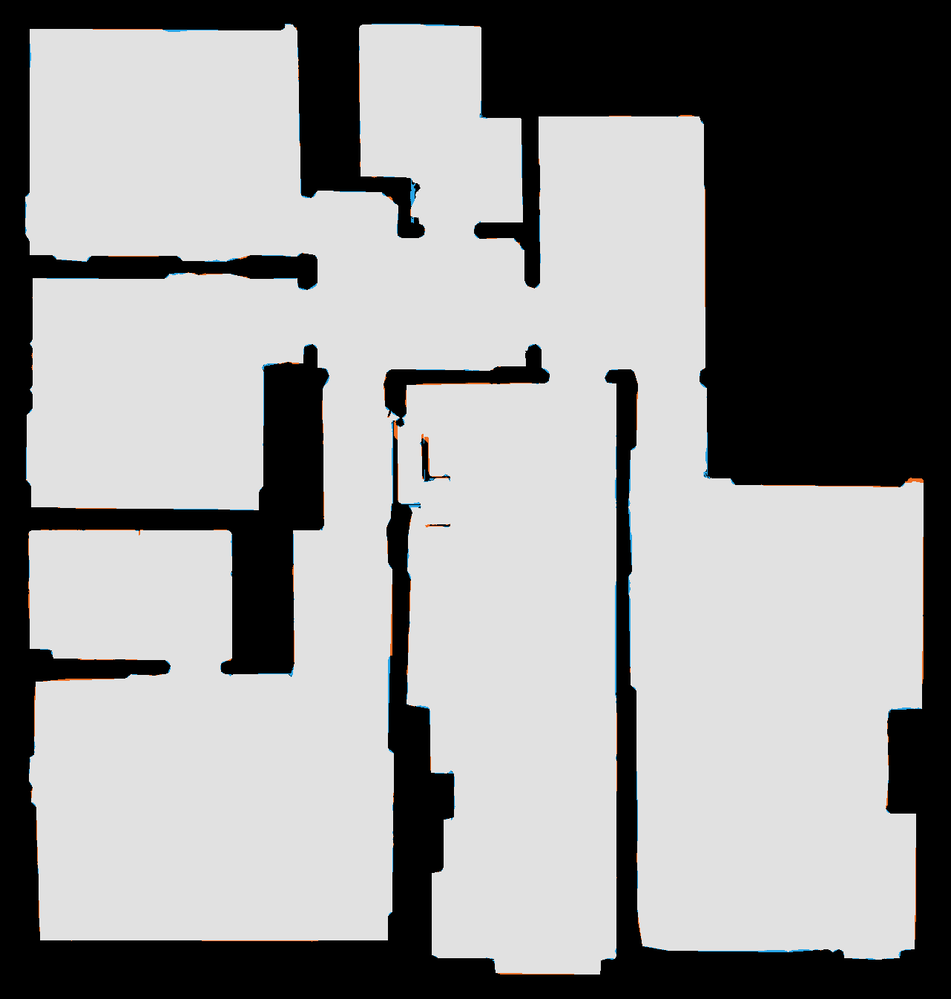
| 방식 | free m² | A 대비 추가 / 제거 m² | 관측 바닥 유지율 | 연결 손실 / 증가 쌍 |
|---|---|---|---|---|
| A | 104.214 | 0.000 / 0.000 | 99.89% | 0 / 0 |
| B | 104.010 | 0.343 / 0.547 | 99.70% | 0 / 0 |
| C | 104.463 | 0.515 / 0.266 | 99.86% | 0 / 0 |
연결 비교: 최대 250개의 공통 내부 지점, 0.5m 간격, 벽과 10cm 여유. 변화 없음은 모든 통로가 올바름을 의미하지 않습니다.
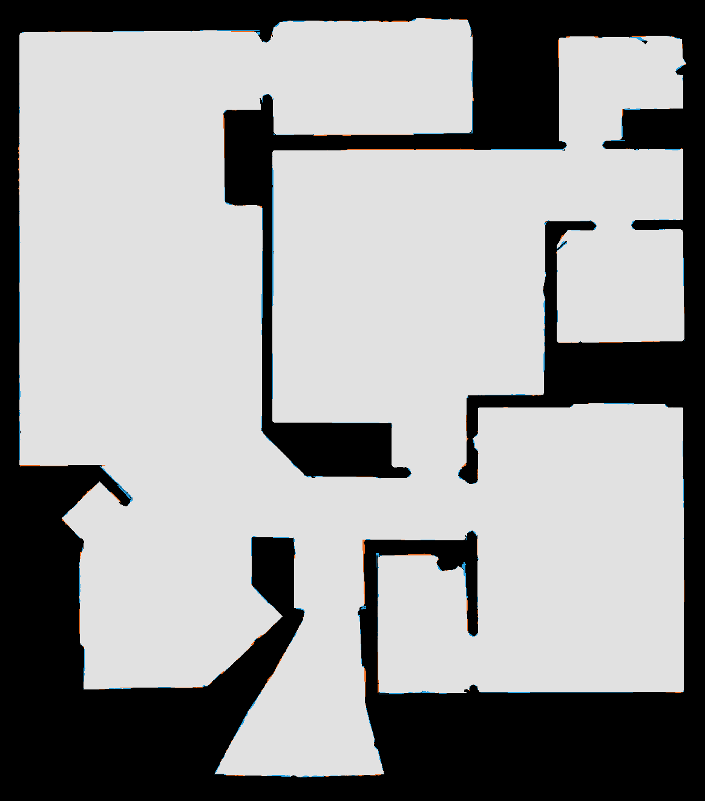
| 방식 | free m² | A 대비 추가 / 제거 m² | 관측 바닥 유지율 | 연결 손실 / 증가 쌍 |
|---|---|---|---|---|
| A | 123.534 | 0.000 / 0.000 | 99.98% | 0 / 0 |
| B | 123.339 | 0.442 / 0.638 | 99.88% | 0 / 0 |
| C | 123.621 | 0.510 / 0.423 | 99.91% | 0 / 0 |
연결 비교: 최대 250개의 공통 내부 지점, 0.5m 간격, 벽과 10cm 여유. 변화 없음은 모든 통로가 올바름을 의미하지 않습니다.
| 방식 | free m² | A 대비 추가 / 제거 m² | 관측 바닥 유지율 | 연결 손실 / 증가 쌍 |
|---|---|---|---|---|
| A | 118.940 | 0.000 / 0.000 | 99.96% | 0 / 0 |
| B | 118.872 | 0.379 / 0.447 | 99.76% | 0 / 0 |
| C | 118.952 | 0.437 / 0.425 | 99.74% | 0 / 0 |
연결 비교: 최대 250개의 공통 내부 지점, 0.5m 간격, 벽과 10cm 여유. 변화 없음은 모든 통로가 올바름을 의미하지 않습니다.
| 방식 | free m² | A 대비 추가 / 제거 m² | 관측 바닥 유지율 | 연결 손실 / 증가 쌍 |
|---|---|---|---|---|
| A | 137.490 | 0.000 / 0.000 | 99.93% | 0 / 0 |
| B | 137.437 | 0.540 / 0.592 | 99.52% | 0 / 0 |
| C | 137.612 | 0.629 / 0.507 | 99.57% | 0 / 0 |
연결 비교: 최대 250개의 공통 내부 지점, 0.5m 간격, 벽과 10cm 여유. 변화 없음은 모든 통로가 올바름을 의미하지 않습니다.
B에서 얇은 U자 형태의 선이 끊어져 검사 지점의 연결이 달라집니다. 선의 실제 의미는 추가 확인이 필요하며 통로 개선 또는 오류로 확정하지 않았습니다.